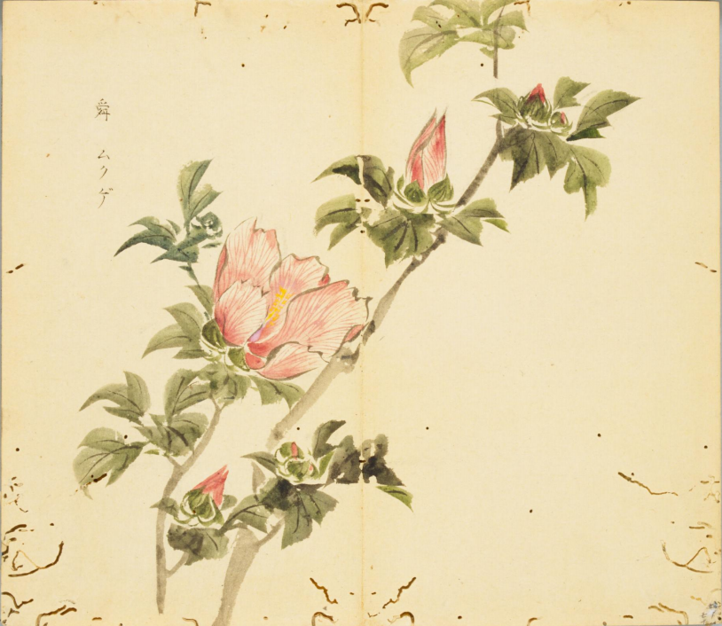
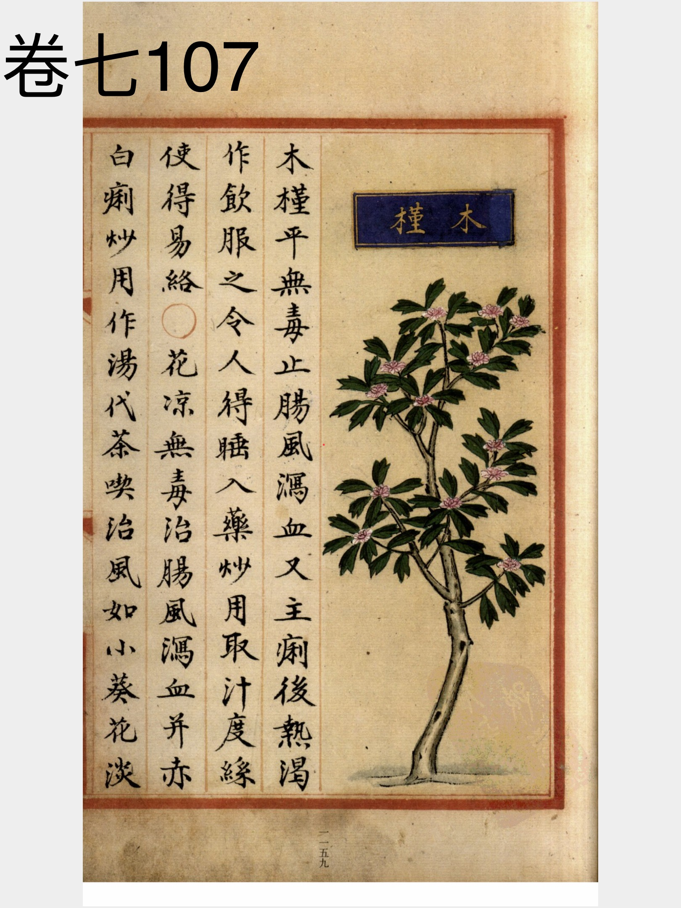
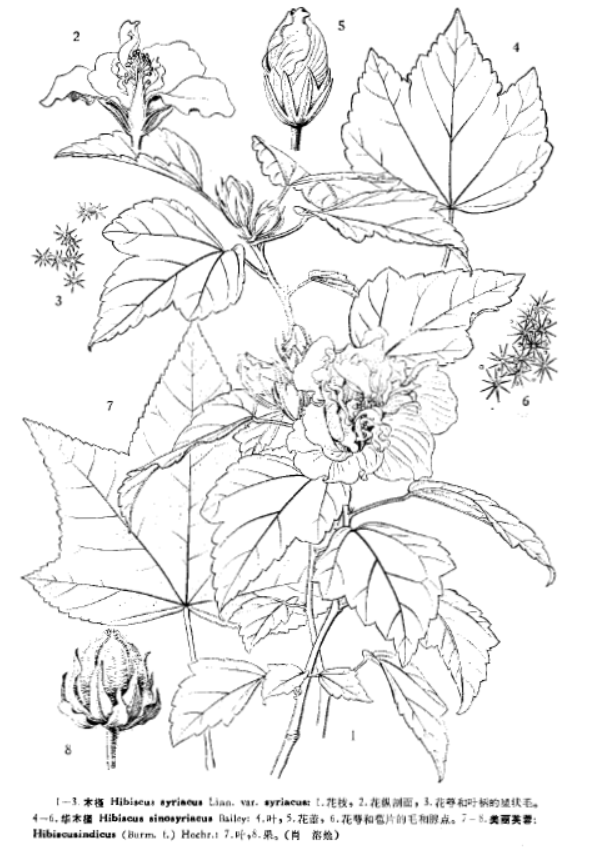

出现篇目
古代记载 《毛诗故训传》
舜，木槿也。（《毛传》注《有女同车》）
《毛诗草木鸟兽虫鱼疏》
舜，一名木槿，一名榇，一名曰椵，齐鲁之间谓之王蒸，今朝生暮落者是也。五月始花，故《月令》“仲夏木堇荣”。 《毛诗正义》
《释草》云：“椴，木槿。榇，木槿。” 樊光曰：“别二名也。其树如李，其华朝生暮落，与草同气，故在草中。”陆机《疏》云：“舜，一名木槿，一名榇，一名曰椴。齐、鲁之间谓之王蒸。今朝生暮落者是也。五月始华，故《月令》‘仲夏，木槿荣’。”（《毛诗正义》疏《有女同车》）
《诗集传》
舜、木槿也。樹如李、其華朝生暮落。（《诗集传》集注《有女同车》）
当代记载 《中国植物志》
木槿（Hibiscus syriacus），锦葵科，木槿属植物。落叶灌木，高3-4米。花钟形，淡紫色。蒴果卵圆形；种子肾形，背部被黄白色长柔毛。花期7-10月。
台湾、福建、广东、广西、云南、贵州、四川、湖南、湖北、安徽、江西、浙江、江苏、山东、河北、河南、陕西等省区，均有栽培，系我国中部各省原产。

<细井徇>

<补遗雷公炮制便览>

<中国植物志>